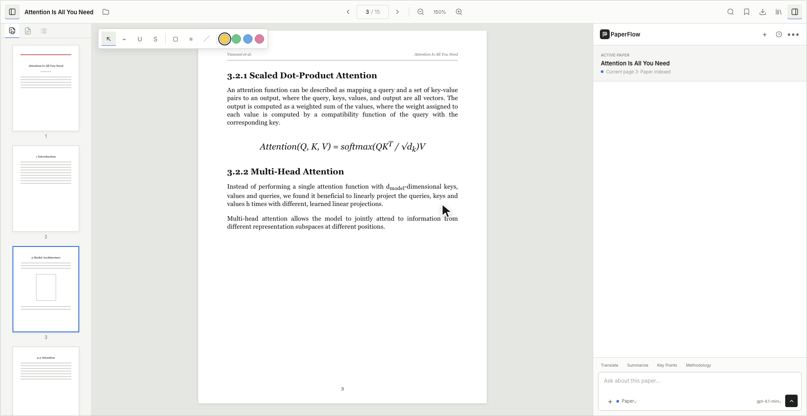
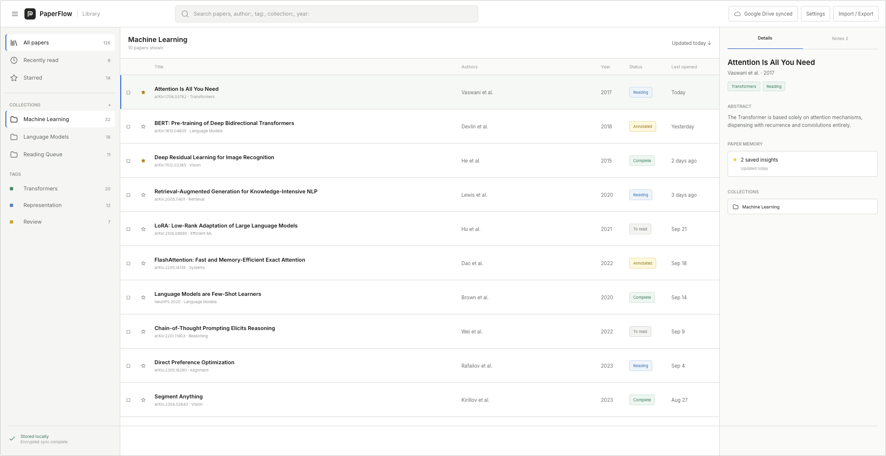

BROWSER-NATIVE RESEARCH WORKSPACE
Research shouldn't be
split across tabs.
Read, annotate, ask, remember, and organize papers without leaving the browser.
arxiv.org/pdf/1706.03762
PaperFlow active

Read where you find papers. Think where you read them.
01 / BEFORE
Research starts
in pieces.
A PDF in one tab. Notes somewhere else. A chatbot with no page context. A library that cannot remember the conversation.
multi-head attention
Compare representation subspaces
What is this paper about?
No source context attached.Attention Is All You NeedReading
BERTSaved
ONE PAPER · ONE CONTEXT
02 / THE PAPER
One paper.
One persistent workspace.
The source is not an attachment to the work. It is where the work lives.
03 / 15saved locallypage-awarepersistentsynced03 / PAGE-AWARE AI
AI that stays
connected to the paper.
Questions, answers, and citations remain grounded in the page you are reading.

Self-attention gives each token a direct path to every other token, preserving long-range context without recurrence.
04 / ANNOTATION
Think directly
on the paper.
Highlight an argument. Underline a definition. Attach a note to the exact place that made you stop.

05 / PAPER MEMORY
Come back days later.
PaperFlow remembers where you left off.
PAPER MEMORY / LOCAL63%
THREAD 03
PAGE 03
READY
The paper opens with its context intact.
06 / RESEARCH LIBRARY
Your papers become
a research system.
Collections, tags, status, citations, and history stay dense enough to scan and quiet enough to think.

07 / ARCHITECTURE
Your research
stays yours.
PaperFlow keeps the document workspace in the browser. Sync and AI remain explicit connections you control.
01 / BROWSER
Chrome + PaperFlow
Reader · Library · Search · OCR
02 / LOCAL STORAGE
IndexedDB + OPFS
Metadata · notes · annotations · PDFs
03 / YOUR GOOGLE DRIVE
Encrypted sync
drive.file · no document backend
04 / AI PROVIDER
Codex CLI or compatible API
Direct provider connection
08 / PRINCIPLE
Research tools should
disappear into the work.
The PDF remains central. Everything else works beside it.
Read where you find papers.
Think where you read them.
OPEN SOURCELOCAL-FIRST